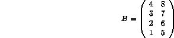

There are two types of intrinsic matrix multiplication these should always be used when appropriate as they will be the most efficient method of calculation:
This is the inner (dot) product of two rank 1 arrays. Clearly, VEC1, VEC2 must conform in size and must be one dimensional. Care must be taken not confuse this intrinsic with DPROD the DOUBLE PRECISION product function or PRODUCT the intra-matrix product (see Section 3.2.5).
An example of use is,
DP = DOT_PRODUCT(A,B)
which is equivalent to:
DP = A(1)*B(1) + A(2)*B(2) + ...
or
DP = SUM(A*B)
The result is also defined for COMPLEX and LOGICAL array arguments. For COMPLEX the result is,
DP = SUM(CONJG(A)*B)
and for LOGICAL,
DP = LA(1).AND.LB(1) .OR. LA(2).AND.LB(2) .OR. ...
This is the `traditional' matrix-matrix multiplication and is not equivalent to MAT1*MAT2. There are certain restrictions placed on the function arguments which say that the arrays must match in specific dimensions, they do not have to be conformable:
Element (i,j) of the result is,
SUM(MAT1(i,:)*MAT2(:,j))
The result is also defined for LOGICAL arguments,
ANY(MAT1(i,:).AND.MAT2(:,j))
If A and B are set up as follows,
and

then the following program
PROGRAM DEMO
INTEGER :: A(2,4)
INTEGER :: B(4,2)
A(1,:) = (/1,2,3,4/)
A(2,:) = (/5,6,7,8/)
B(:,1) = (/4,3,2,1/)
B(:,2) = (/8,7,6,5/)
PRINT*, "DOT_PRODUCT(A(1,:),A(2,:)) = ", DOT_PRODUCT(A(1,:),A(2,:))
PRINT*, "MATMUL(A,B) = ",MATMUL(A,B)
END PROGRAM DEMO
gives
DOT_PRODUCT(A(1,:),A(2,:)) = 70
MATMUL(A,B) = 20 60 60 164